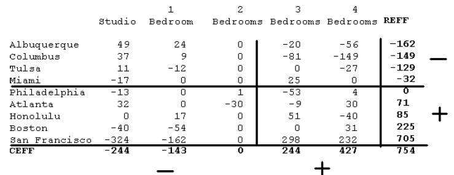
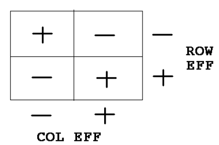
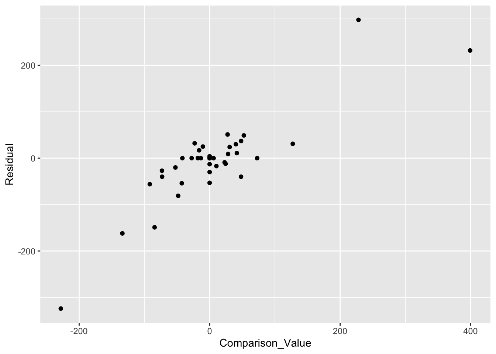
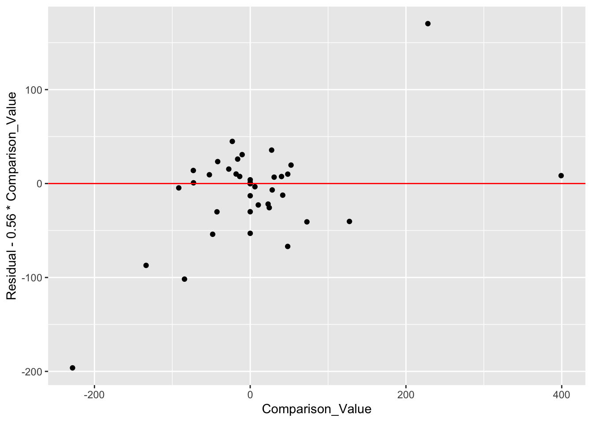

20 Extended Fit
In the two previous lectures, we have talked about two ways of fitting a model to a two-way table. We can fit an additive model using median polish – this seemed to work well for our temperature data that was classified by city and month. In other situations, like the Olympics swimming times classified by year and distance, it seemed better to use a multiplicative fit. For an arbitrary dataset, how can we tell if an additive fit or a multiplicative fit is more suitable?
Here we describe a way of extending the additive model, called an extended fit, that will help us in situations where an additive model does not fit the data well. We will see that this extended fit has a strong connection with the multiplicative fit that we saw earlier.
20.1 Meet the data
The New York Times Almanac has a lot of interesting data about housing in the United States.
When you are considering taking a new job, one factor in your decision-making is the cost of living in the city where you are thinking of moving. The almanac gives the average price of apartments and houses for many cities in the country.
The table shown below gives the market price of five different types of apartments for nine cities. These cities were chosen to get a good spread in cost of housing – we see that San Francisco is over twice as expensive than Tulsa.
library(LearnEDAfunctions)
library(tidyverse)
prices <- rent.prices[, -1]
row.names(prices) <- rent.prices[, 1]
prices## Studio One.Bedroom Two.Bedroom Three.Bedroom
## Albuquerque 397 473 592 816
## Atlanta 613 682 795 1060
## Boston 695 782 979 1223
## Columbus 398 471 605 768
## Honolulu 595 713 839 1134
## Miami 461 579 722 991
## Philadelphia 497 611 755 945
## San_Francisco 891 1154 1459 2001
## Tulsa 392 470 625 869
## Four.Bedroom
## Albuquerque 963
## Atlanta 1282
## Boston 1437
## Columbus 883
## Honolulu 1226
## Miami 1149
## Philadelphia 1185
## San_Francisco 2118
## Tulsa 1025The goal here is to gain some understanding about the difference in rentals between different cities, and between apartments of different types. Is an additive model appropriate for these data? Well, you might not know, so we will be na"{}ve and start by trying an additive fit.
20.2 An additive fit
We first use R to fit an additive model using median polish. The fitted model (common, row and column effects) and the residuals are shown in the below table.
(additive.fit <- medpolish(prices))## 1: 2011
## 2: 1938
## Final: 1938##
## Median Polish Results (Dataset: "prices")
##
## Overall: 754
##
## Row Effects:
## Albuquerque Atlanta Boston Columbus
## -162 71 225 -149
## Honolulu Miami Philadelphia San_Francisco
## 85 -32 0 705
## Tulsa
## -129
##
## Column Effects:
## Studio One.Bedroom Two.Bedroom Three.Bedroom
## -244 -143 0 244
## Four.Bedroom
## 427
##
## Residuals:
## Studio One.Bedroom Two.Bedroom Three.Bedroom
## Albuquerque 49 24 0 -20
## Atlanta 32 0 -30 -9
## Boston -40 -54 0 0
## Columbus 37 9 0 -81
## Honolulu 0 17 0 51
## Miami -17 0 0 25
## Philadelphia -13 0 1 -53
## San_Francisco -324 -162 0 298
## Tulsa 11 -12 0 0
## Four.Bedroom
## Albuquerque -56
## Atlanta 30
## Boston 31
## Columbus -149
## Honolulu -40
## Miami 0
## Philadelphia 4
## San_Francisco 232
## Tulsa -27For the following, it will be helpful to order the rows and columns of the table by the effects. Actually, the columns are already ordered by effects – a studio apartment tends to be cheaper than a 1 bedroom apartment which is cheaper than a 2 bedroom apartment and so on. But the rows were not originally ordered by effects and so we’ve reordered the cities with the cheapest cities on top.
prices <- prices[order(additive.fit$row), ]
additive.fit <- medpolish(prices)## 1: 2011
## 2: 1938
## Final: 1938additive.fit$residual## Studio One.Bedroom Two.Bedroom Three.Bedroom
## Albuquerque 49 24 0 -20
## Columbus 37 9 0 -81
## Tulsa 11 -12 0 0
## Miami -17 0 0 25
## Philadelphia -13 0 1 -53
## Atlanta 32 0 -30 -9
## Honolulu 0 17 0 51
## Boston -40 -54 0 0
## San_Francisco -324 -162 0 298
## Four.Bedroom
## Albuquerque -56
## Columbus -149
## Tulsa -27
## Miami 0
## Philadelphia 4
## Atlanta 30
## Honolulu -40
## Boston 31
## San_Francisco 232
We’ve drawn some lines to divide the table. The rows above (below) the center horizontal line have negative (positive) effects. Similarly, the columns to the left (right) of the center vertical line have negative (positive) effects.
Looking at the row and column effects, we see
- San Francisco is the most expensive place to rent. Comparing effects, San Francisco is $705 - $225 = $480 more expensive than the next most expensive city Boston. Albuquerque and Columbus are the cheapest cities.
- A 4-bedroom apartment is, on the average, $183 more expensive than a 3-bedroom apartment. A 1-bedroom apartment is about $100 more expensive than a studio apartment.
20.3 Looking at the residuals
Looking at the residuals, we see a lot of large values – in particular, we note one residual larger than 300 in absolute value, two residual in the 200’s, and two residuals in the 100’s. These large residuals are in the same order of magnitude as the effects, so this additive model doesn’t appear to fit very well.
The residuals appear large – also they show a distinctive pattern.

The residuals generally are positive in the upper left and lower right quadrants, and negative in the upper right and lower left quadrants.
Can we improve the additive model to remove this residual pattern?
20.4 Comparison values
In the above figure, we also show the sign of the row effects and the column effects. Suppose that we multiply the row effect by the column effect for each cell of the table. Then we would observe the same pattern as we saw in the residuals above. This observation motivates adding a single new term to improve our additive fit.
For each cell in the two-way table, we define a comparison value (cv) as \[ cv = \frac{ROWEFF \times COLEFF}{COMMON}. \]
To illustrate computing a comparison value, consider the upper left cell of the table that corresponds to a studio apartment in Albuquerque. The corresponding row effect is -162, the corresponding column effect is -244, and the common value is 754; so the comparison value for this cell is (-162)(-244)/754 = 52.424. The table below shows the comparison values for all cells of the table.
1 2 3 4
Studio Bedroom Bedrooms Bedrooms Bedrooms REFF
Albuquerque 52.424 30.724 0 -52.424 -91.743 -162
Columbus 48.218 28.259 0 -48.218 -84.381 -149
Tulsa 41.745 24.466 0 -41.745 -73.054 -129
Miami 10.355 6.069 0 -10.355 -18.122 -32
Philadelphia 0.000 0.000 0 0.000 0.000 0
Atlanta -22.976 -13.466 0 22.976 40.208 71
Honolulu -27.507 -16.121 0 27.507 48.137 85
Boston -72.812 -42.672 0 72.812 127.420 225
San Francisco -228.143 -133.707 0 228.143 399.251 705
CEFF -244 -143 0 244 427 754Note that these comparison values exhibit the same basic pattern that we saw in the residuals.
20.5 Extending the additive model by one more term
We add a single term to our additive model to account for the pattern that we see in the residuals. This new model, called an extended model, has the form \[ FIT = COMMON + ROW \, EFF + COL \, EFF + k CV, \] where \(CV\) is the comparison value and \(k\) is a constant chosen that the new model is a good fit to the data.
20.6 Finding k
How do we find the coefficient \(k\) of the comparison value in our extended model? We plot the residuals from the additive fit (vertical) against the comparison values (horizontal). As expected, we see a positive relationship between the residuals and the cv’s. The slope of a line fitted to this plot is our estimate at the coefficient \(k\).
cv <- with(additive.fit,
outer(row, col, "*") / overall)
df <- data.frame(Comparison_Value = as.vector(cv),
Residual = as.vector(additive.fit$residuals))
ggplot(df, aes(Comparison_Value, Residual)) + geom_point()
rline(Residual ~ Comparison_Value, df)$b## [1] 0.5669006We check the suitability of our line fit by looking at the residuals and seeing if we have removed the trend from the scatterplot. (It appears from the graph that we have indeed removed the trend from the plot.)
ggplot(df, aes(Comparison_Value,
Residual - 0.56 * Comparison_Value)) +
geom_point() +
geom_hline(yintercept = 0, color="red")
The slope of this line, .56, is our estimate at the coefficient k. So our improved fit to these data has the form
\[ FIT = COMMON + ROW \, EFF + COL \, EFF + 0.56 CV, \]
20.7 Relationship with multiplicative fit
In our extended fit, we found that a suitable choice for the coefficient k of the comparison value was k = .8. What if we chose the nearby value k = 1? Then the extended model is (using more concise notation) \[ COMMON + ROW + COL + \frac{ROW \times COL}{COMMON} \] Using a little algebra, note that this fit can be rewritten as \[ COMMON \left(1 + \frac{ROW}{COMMON} + \frac{COL}{COMMON} + \frac{ROW \times COL}{COMMON^2}\right) \] \[ = COMMON \left(1 + \frac{ROW}{COMMON}\right) \left(1 + \frac{COL}{COMMON}\right), \] which is a multiplicative fit with \[ ROWEFF = \left(1 + \frac{ROW}{COMMON}\right), \, COLEFF = \left(1 + \frac{COL}{COMMON}\right). \]
We have already discussed this type of fit. Specifically, we found that one could find a multiplicative fit for a two-way table by taking an additive fit of the log response.
20.8 Extended fits and transformations
Let’s summarize what we’ve learned in our example.
The additive fit was unsatisfactory – there was a very clear pattern in the residuals.
The special pattern in the residuals motivated the consideration of an extended fit. By plotting the residuals against the comparison values, we saw that the slope of the comparison values was .8 which is pretty close to 1.
If we use \(k=1\) in our extended fit, this is equivalent to a multiplicative model which we can fit by fitting an additive model to the log rents. So this analysis suggests that we should reexpress the response by taking a log which is a power transformation with \(p = 0\).
Actually, what we found here can be generalized. Suppose that the slope of the (residual, comparison value) plot is \(k\). Then the recommendation is to perform an additive fit to transformed data where the data is reexpressed using a power transformation with power \(p = 1 - k\).